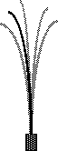
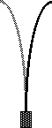

| The first experimental implementation of the OGY control
algorithm was done by Ditto, Rauseo, and Spano
using a magnetic ribbon, extended vertically and bent under its weight. |
|
 |
|
 |
| Ribbon at rest |
Chaotic oscillation |
Stabilized fixed point |
Stabilized 2-cycle |
|
| A varying magnetic field drove the ribbon into chaotic oscillations. |
| Unstable fixed points and cycles were
identified within the chaos. |
| Control was achieved by small modifications to the constant
component of the magnetic field. |
| Here are some of the results. |
|